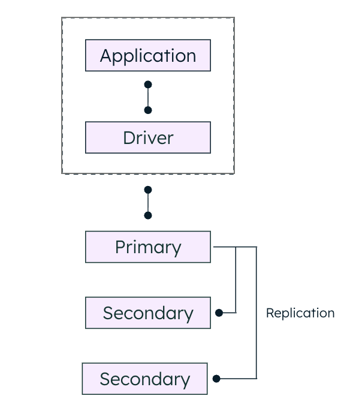

2 to 50 redundant data copies

Access the high-fidelity mapping tool to visualize complex sharding clusters and cross-cloud resilience zones. [cite: 361, 420]
Nodes ping every 2s. If missed for 10s, it's marked unreachable. [cite: 37, 39]
A secondary node calls for an election based on the Raft algorithm. [cite: 25, 62]
Consensus reached when an absolute majority votes for the same node. [cite: 48, 57]
The cluster reaches consensus when a majority ($E(n/2) + 1$) votes for a node. This process ensures high availability and resilience. [cite: 49, 112]